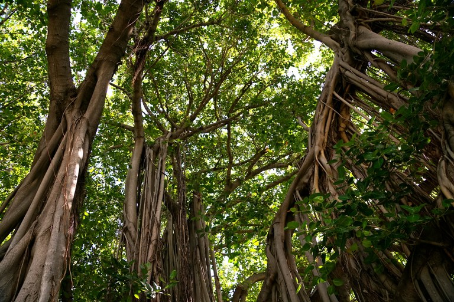
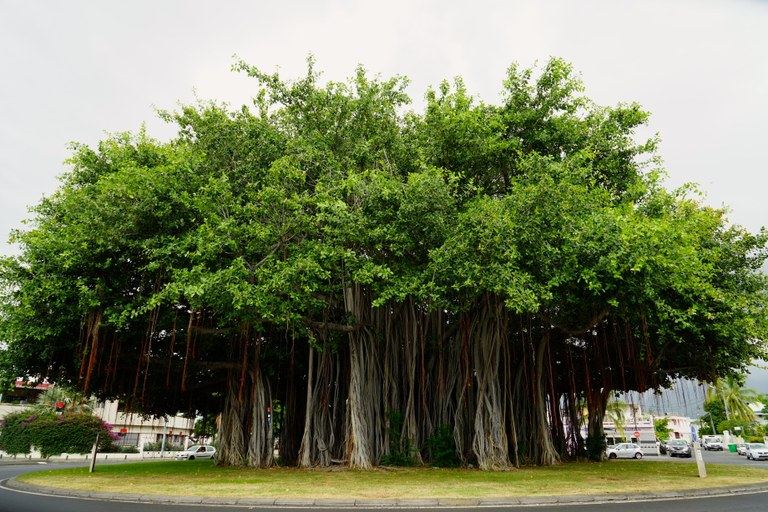

Le Banian de la Réunion est-il le plus fort ?
Septembre est propices aux concours de toutes sortes en France. Quand les DOM TOM participent à ce concours alors la compétition est plus folle.
L'arbre de l'année
Cette année, Terre sauvage, le magazine nature de Bayard Presse organise avec le concours de l'Office national des forêts, la troisième édition de l'arbre de l'année, un concours dont les gagnants ne remportent qu'un peu plus de nottoriété. Les arbres sont soumis par le public ou des collectivités, puis nominés par un comité. Le concours commence alors avec une liste d'arbres représentant chacun leur région. Le public élit son arbre de l'année par un vote ochlocratique tandis qu'un jury d'experts désigne un autre arbre de l'année dans une pure tradition technocratique[1].
Depuis trois ans, le prix de l'arbre de l'année ont été remis à des arbres de métropole ou de Corse, l'île de beauté cumulant déjà deux lauréat depuis 2011. L'année 2013 a vu arriver les arbres étrangers, des «invités» qui poussaient loin de Paris et surtout hors de France. Poussant loin de Paris, il y a aussi des nominés d'Outre-mer comme le Ficas refusa de Saint-Denis ou les tamarins des hauts à la Réunion ou le fromager de Saint-Pierre en Martinique ou le figuier maudit de Petit-Canal en Guadeloupe.
Cette année trois arbres d'outre mer sont en lice:
- le Banian du Port à la Réunion,
- le fromager de Saül en Guyane
- un autre fromager, au Marin en Martinique.
Les fromagers sont des arbres impressionnants par leur grande hauteur, arbre tropical, il dresse sa canopée à 50m de haut pour recueillir la lumière nécessaire à sa croissance. celui de Guyane est impressionnant parce qu'il en impose, étant tout seul au centre d'un village.
À l'inverse, le Banian, candidat de la Réunion s'étend à l'horizontale sur une zone de presque 45m de diamètre au rond point de la Glacière. Aux dernières nouvelles ces deux derniers arbres étaient en tête des votes du public.

Les troncs du Banian du Port. Photo: l'arbre de l'année.
Saturation de votes ultramarins
Les Reunionnais aiment bien les concours, c'est par millions qu'ils envoient leurs SMS surtaxés à chaque élection de miss. Les Guyanais se sont eux aussi pris au jeu en défendant la place de challenger de leur fromager. Le mercredi 12 août, un déluge de vote fait exploser les compteurs, la banian de la Réunion totalisait 27.000 votes tandis que le fromager de Guyane en réunissait 24.000. Un piratage dont les organisateurs n'ont pas donné de détail, a alors obligé les gestionnaires du site à retirer les deux arbres en tête du site, pour nettoyer les faux votes. Jeudi 13 août, le banian (ou Ficus benghalensis) de la Réunion restait en tête avec 15.149 votes suivit de près par le fromager de Guyane avec 11.727 votes.

Vue d'ensemble du Banian du Port. Photo: l'arbre de l'année.
Le votes on repris de plus belle, soutenus par une grosse campagne de part et d'autre de la planète. Le résultat des votes qui était public est devenu secret le 24 août afin de préserver le suspens. Ce jour la, le fromager de Guyane était en tête de quelques centaines de voix, 23.400 contre 23.172 pour le banian du Port. Les votes ayant encore continué pendant sept jours jusqu'à la clôture le 31 août au soir, la question reste entière:
Le Banian de la Réunion est-il le plus fort ?
Le résultat du vote sera connu le 29 septembre et sera annoncé lors d'une cérémonie qui prendra place à Poitiers. Il n'est pas certain que tous les nominés se déplacent pour la remise des prix.
Les résultats
Le verdict est tombé le 29 septembre:
C’est le Fromager de Saül (Guyane) qui a remporté le « PRIX DU PUBLIC », avec plus de 30 000 voix,
après un coude à coude serré avec Banian de la glacière au Port à la Réunion.
Les réunionnais peuvent se féliciter d'avoir été nombreux à voter pour leur arbre parce que cela leur a valu une citation dans le communiqué de presse de l'ONF, Pas assez pour gagner le prix mais suffisement pour faire connaitre un peu plus cet arbre exceptionel. Cet article en est la preuve ;-)
1- voir les différentes formes de gouvernement sur wikipedia et dites ce que vous en pensez.